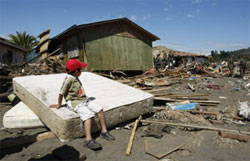

|
Steuern gegen Armut |
Ein internationales Netzwerk, hat eine Kampagne gestartet, mit der die Staats- und Regierungschefs der G 20-Länder aufgefordert werden, für die Einführung einer Umsatzsteuer auf den Handel mit Finanzvermögen zu sorgen.
Die Kampagne weist darauf hin, dass mit der aktuellen Krise Millionen von Menschen ihren Arbeitsplatz verloren hätten. Überall in der Welt habe die Armut zugenommen, und die Zahl der Hungernden sei um 100 Millionen gestiegen. Mit den Einnahmen der Finanztransaktionssteuer könnte aktiv Sozial- und Umweltpolitik gestaltet werden, zugleich hätte die Steuer eine entschleunigende Wirkung auf die Finanzmärkte.
Weitere Informationen:
|
22.März: Internationaler Weltwassertag der Vereinten Nationen
4000 Kinder sterben täglich durch verschmutztes Wasser
Lebensgrundlage von Menschen entlang vieler Flüsse ist bedroht |
Rund 1,5 Millionen Kinder sterben jedes Jahr durch verunreinigtes Trinkwasser, das sind über 4000 Kinder täglich. Verschmutztes Wasser verursacht Durchfall, Cholera, Hepatitis A und viele andere Krankheiten. Mehr als eine Milliarde Menschen auf der Welt haben keinen Zugang zu sauberem Trinkwasser. Sie decken ihren täglichen Bedarf aus Flüssen, Seen, Brunnen und Bächen. Dies erklärte das Kinderhilfswerk terre des hommes im Vorfeld des internationalen Weltwassertages am 22. März.
och auch das Eingreifen in den natürlichen Verlauf von Flüssen bedroht die Lebensgrundlage ganzer Dorfgemeinschaften. »Flüsse wie der Mekong in Nordthailand werden kanalisiert oder mit großen Dämmen aufgestaut. Das reduziert den Fischbestand und damit die Lebensgrundlage der Menschen entlang des Flusses und vermindert die natürlichen Überflutungsgebiete. Die Gefahr von Überschwemmungen oder Ernteausfällen steigt dadurch erheblich«, erklärte Iris Stolz, Referentin für Kinderrechte von terre des hommes. Zudem bedrohten Abfälle, Abwässer und Öl die Lebensgrundlage von Fischern und Bauern. Der Mekong verliere nicht nur an Artenvielfalt, sondern sei durch Vertiefungen und den Bau von Staudämmen unberechenbar geworden.
Die terre des hommes-Kampagne »Our Rivers, Our Life – Kinder schützen ihre Flüsse« will erreichen, dass Dorfgemeinschaften vor Übernutzung und Verschmutzung ihrer Trinkwasserversorgung durch Industrie, Bergbau, Landwirtschaft und Privathaushalte geschützt werden. In den meisten Ländern existierten Umweltstandards nur auf dem Papier, so Iris Stolz. terre des hommes setze sich mit seinen Partnern dafür ein, dass diese Standards von den Menschen auch eingeklagt werden könnten.
Weitere Informationen:
|
Johann-Belzer-Schule Weisenbach: SMV spendet für Haiti |
Seit dem 2. Februar beschäftigt die Erdbebenkatastrophe in Haiti die Schulgemeinschaft der Johann-Belzer-Schule. An diesem Tag besuchte der in Deutschland lebende Haitianer Mario Laroche die Schülerinnen und Schüler in Weisenbach und hatte viele Fragen der Kinder und Jugendlichen zu beantworten. Die Schülermitverantwortung (SMV) hatte beschlossen, eine Spendenbox aufzustellen und diese gefüllt der Hilfsorganisation terre des hommes zukommen zu lassen. Seitdem wurde fleißig gespendet.
Am Tag der offenen Tür konnten alle Besucher noch einmal beobachten, wie die Spendensäule stündlich anwuchs. Die Klasse 8 entschied, die Einnahmen vom Verkauf ihrer Visitenkarten zu spenden.
Ebenso ging noch ein ordentlicher Betrag durch das Filzen von Blumen ein. Am Ende des Tags der offenen Tür überreichten Schülerinnen der Johann-Belzer-Schule einen Spendenscheck über 836,17 Euro an Heinz Wolf von terre des hommes. |
Internationale Tourismus-Börse (ITB) in Berlin:
terre des hommes: Sextourismus stoppen
Mehr Aufmerksamkeit bei Touristen und Reiseveranstaltern |
Jährlich werden weltweit rund 1,8 Millionen Kinder sexuell ausgebeutet. Viele von ihnen fallen Kinderschändern in die Hände, die die Mädchen und Jungen gewaltsam zu sexuellen Dienstleistungen zwingen oder für pornographische Aufnahmen missbrauchen. Rund 400.000 Männer weltweit reisen jährlich ins Ausland, um in fernen Ländern und Kulturen Sex zu haben. Geschätzte 20.000 deutsche Männer suchen dabei gezielt nach Kindern. In Asien werden rund eine Million Kinder sexuell ausgebeutet: Neben Thailand ist vor allem Kambodscha ein beliebtes Reiseziel für Pädophile.
Nach Schätzungen einer UN-Studie werden 1,2 Millionen Kinder wie Ware gehandelt. Viele von ihnen landen in der Prostitution. Doch die Dunkelziffer ist weitaus höher, denn Täter wie auch Opfer scheuen die Öffentlichkeit. In den meisten Ländern ist Kinderprostitution verboten. Doch in vielen Fällen gucken Taxifahrer, Hotelangestellte und Polizei weg, manchmal auch gegen Zahlung eines Schweigegeldes.
terre des hommes fordert Reiseveranstalter auf, den Verhaltenskodex für die Deutsche Reiseindustrie zu unterzeichnen. Er beinhaltet Schulungen für Mitarbeiter in der Tourismusbranche, um auf das Problem der Kinderprostitution aufmerksam zu machen. Ebenso müssen Touristen über das Verbrechen des sexuellen Missbrauchs von Kindern und seine Folgen aufgeklärt werden. terre des hommes hat in Zusammenarbeit mit dem Bundesministerium für Familie, Senioren, Frauen und Jugend den Spot »Witness« erstellt, der zum Beispiel an Bord von Flugzeugen gezeigt wird.
Die von terre des hommes mitentwickelte Internetseite www.child-hood.com enthält Informationen für Reisende und Reiseveranstalter zum Thema der sexuellen Ausbeutung von Kindern im Tourismus sowie Tipps für Reisende, die den Verdacht hegen, dass an ihrem Urlaubsort Kinder missbraucht werden.
|
Erdbeben in Chile: Katastrophal und besorgniserregend
Bündnis-Mitglied Misereor stockt Hilfe für Erdbebenopfer in Chile auf 50.000 Euro auf |
Das katholische Hilfswerk Misereor hat seine Soforthilfe für die Opfer des Erdbebens in Chile auf 50.000 Euro aufgestockt. Damit reagiert Misereor auf Meldungen von Projektpartnern, die die Folgen des Bebens vom vergangenen Samstag in den stark betroffenen Regionen als katastrophal und besorgniserregend bezeichnen.
„In den Regionen Maule und Bio Bio sind fast alle kleinen Städte und Fischerdörfer durch das Erdbeben und den anschließenden Tsunami zerstört worden“, berichtet Jorge Brito, Direktor des Diözesanen Entwicklungsbüros Crate in der Diözese Talca. „Die Zahl der Toten nimmt von Tag zu Tag zu. Keiner kennt momentan die genaue Zahl der Vermissten, die es in Folge des Tsunami an der Küste gibt. Nach Augenzeugenberichten hatte eine Welle von beträchtlicher Höhe eine Schneise der Verwüstung in den Regionen hinterlassen. Auch in den Dörfern im Landesinneren sind zahlreiche Gebäude und Kirchen zerstört worden“, so Brito.
„Wir machen uns große Sorgen, dass das Ausmaß der Erdbebenkatastrophe in Chile momentan unterschätzt wird“, erklärt Misereor -Geschäftsführer Martin Bröckelmann-Simon. „Es gibt keine gesicherten Angaben über die Folgen der Katastrophe in den ländlichen Regionen. In den am schlimmsten betroffenen Gebieten um Concepcion, Talca, Constitucion und Talcahuano fehlt es noch immer an Strom, Wasser und Lebensmitteln. In viele Küstenorte sind die Rettungskräfte noch nicht einmal vorgedrungen. Die Seuchengefahr steigt.“
Misereor werde über Crate die Opfer mit Nahrungsmitteln, Wasser, Medikamenten und Zelten versorgen. „Die Situation ist heikel, weil viele Menschen aus Frust über die ausbleibende Hilfe zu Plünderungen greifen. Mit Crate haben wir aber einen sehr erfahrenen Partner, der sich bereits beim Erdbeben 1985 in der Notversorgung und beim anschließenden Wiederaufbau bewährt hat“, so Bröckelmann-Simon.
Misereor fördert in Chile zurzeit zehn Projekte in Höhe von 1,7 Millionen Euro. Schwerpunkt der Arbeit sind die Bereiche angepasste Landwirtschaft und Förderung von Wohnbau, sowie Menschenrechte und Ausbildung.
Quelle |
Nothilfe für Chile |
Chile wurde am 27. Februar von einem schweren Beben der Stärke 8,8 heimgesucht. Mehr als 700 Menschen sind umgekommen, 300 werden noch vermisst. Betroffen ist vor allem die Küstenregion südlich der Hauptstadt Santiago. Obwohl Chile zu den wohlhabenden Ländern Lateinamerikas zählt und versucht hat, sich auf derartige Naturkatastrophen vorzubereiten, sind die Vorgaben für erdbebensicheres Bauen gerade unter ärmeren Familien längst nicht überall erfüllt. Zudem hat die Heftigkeit des Bebens die zu erwartenden Dimensionen bei weitem überschritten. terre des hommes hat deshalb unmittelbar nach der Katastrophe Nothilfemaßnahmen in die Wege geleitet. Für die Küstenstadt Lota und sechs Dörfer südlich der besonders von Zerstörungen betroffenen Stadt Concepción werden über den chilenische terre des hommes-Projektpartner La Caleta Hilfslieferungen organisiert. Verteilt werden Lebensmittel, Zelte, Kleidung und Decken. Mit den Maßnahmen werden zunächst etwa 120 Familien erreicht, insgesamt circa 600 Personen. Für betroffene Kinder wird eine psychosoziale Betreuung eingerichtet, um ihnen zu helfen, den Schrecken und das Leid, das sie erleben, zu verarbeiten.
|
|
|
|
 Ansprechpartner Ansprechpartner
|
|
Wolfgang Deppisch
(Projektinfos)
Tel. 07222 / 32927
Heinz Wolf
(Sponsoring, Allgemeines)
Tel. 07225 / 75543
weitere Ansprechpartner
|
|
Erlöse
1992-2012
|
|

Jahr |
Euro |
1992 |
70.000 |
1993 |
75.600 |
1994 |
83.883 |
1995 |
69.617 |
1996 |
51.412 |
1997 |
61.749 |
1998 |
60.333 |
1999 |
68.742 |
2000 |
85.492 |
2001 |
106.375 |
2002 |
78.937 |
2003 |
84.027 |
2004 |
76.662 |
2005 |
149.941 |
2006 |
84.497 |
2007 |
105.958 |
2008 |
104.053 |
2009 |
100.833 |
2010 |
107.254 |
2011 |
103.600 |
| 2012 |
158.250 |
| 2013 |
163.420 |
1977-2013 |
mehr als 2,7 Mio. € |
|
Detailansicht der Erlöszahlen |
|
|


;)
;)